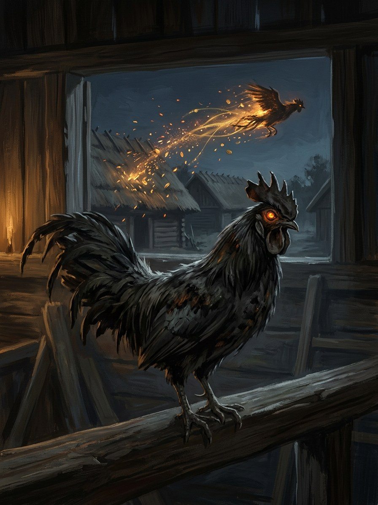

Aitvaras (fire-tailed thief)¶
Relations
Servant of: Velnias — Hatchling of Velnias’s root-wealth.
Origin [Historical record] wealth-spirit hatched from an old rooster's egg, named in 16th-century church writings · [The saga's invention] hatchling of Velnias's root-wealth
Tier Dvasia · bought power (the kept aitvaras)
Danger II hazard → IV deadly
Habitat Under the oven as a black cockerel or cat; a fiery streak at dusk outdoors
Wants Scrambled eggs (kiaušinienė), fed by its keeper; fire
Takes Grain, milk and silver from neighbours. At the keeper's death, his soul goes down to Velnias's roots with the rest of the wealth
Signs Fiery streaks from a poor farm to a rich one; a neighbour who prospers in a bad year; eggshells by the oven; singed feathers
Banes None kill it. Sell it on, set it an endless count (a sack of poppy seed), or burn your own farm
Half-wrong truth. The folk are right that it steals and burns. They are wrong that it serves the devil: it serves the trade, and anyone who feeds it. It makes no wealth, it moves it, so every grain it brings is a grain a neighbour lost.
Unbound (after 1387). Aitvarai turn arsonist. Near Hanseatic towns the Gold-Glutton courts them and they carry warm coin instead of grain, which starts quarrels wherever it is spent.
Theft. Carries stolen wealth from the poor farm to the rich one.
Burning. Spoil its dish and it burns the house.
Feeding it. The neighbours' enmity, and eventually a lynching. In life the household slowly stops being able to give anything away freely.
Selling it on. The buyer inherits the risk. While it counts, it is still yours.
Cursing it in flight. It drops its load on your land, and the stolen goods are in your barn when the owner comes looking.
Aitvaras (fire-tailed thief)

Aitvaras (fire-tailed thief) · creature¶
Type |
creature |
Status |
The saga’s invention |
Note |
Bestiary §2. Danger II → IV. |
Folk source [Historical record]¶
A spirit that brings its keeper wealth stolen from neighbours. It hatches from the egg of an old rooster (seven or nine years old) kept warm by its owner, or is bought from a merchant. Outdoors it flies as a fiery streak; indoors it is a black cockerel or cat. It is fed scrambled eggs, and when offended it burns the farm. Named in 16th-century church writings against peasant superstition; Christian-era tales make it a devil’s gift paid for with the keeper’s soul.
In the saga (where the folk are half-wrong)¶
A hatchling of Velnias’s root-wealth that hungers for fire. It does not make wealth, it moves it: every grain it brings is a grain a neighbour lost. The folk are right that it steals and burns, and wrong that it serves the devil: it serves the trade, and anyone who feeds it. “A soul for an aitvaras” is true: the keeper goes down to Velnias’s roots at death, and in life the household slowly stops being able to give anything away freely.
Signs & habitat¶
Fiery streaks at dusk from a poor farm to a rich one; a neighbour who prospers in a bad year; eggshells by the oven; a smell of singed feathers.
Before / after the Unbinding¶
Before: a nuisance kept in bounds by custom. After: aitvarai turn arsonist; near Hanseatic towns the Gold-Glutton courts them and they carry warm coin instead of grain, which starts quarrels wherever it is spent.
Banes, wards, bargains, and their cost¶
Feed it and it stays loyal (cost: the neighbours’ enmity, eventually a lynching). Sell it on, or set it an impossible count such as a sack of poppy seed (while it counts it is still yours). Spoiling its dish makes it burn the house; some families burn their own farm to be free. Cursing or baring yourself at a flying aitvaras makes it drop its load on your land, so the stolen goods are in your barn when the owner comes.
Danger level¶
II hazard → IV deadly.
Story hooks¶
Book II: Jogaila’s Vilnius and its new Magdeburg merchants crawling with aitvarai fed by the Gold-Glutton. Book IV: a fire in Trakai’s town blamed on Vytautas’s enemies, really an aitvaras abandoned by a bankrupt Hanseatic factor.
Connections¶
graph LR
aitvaras["Aitvaras (fire-tailed thief)"]
velnias["Velnias"]
aitvaras -->|Servant of| velnias
style aitvaras stroke-width:3px